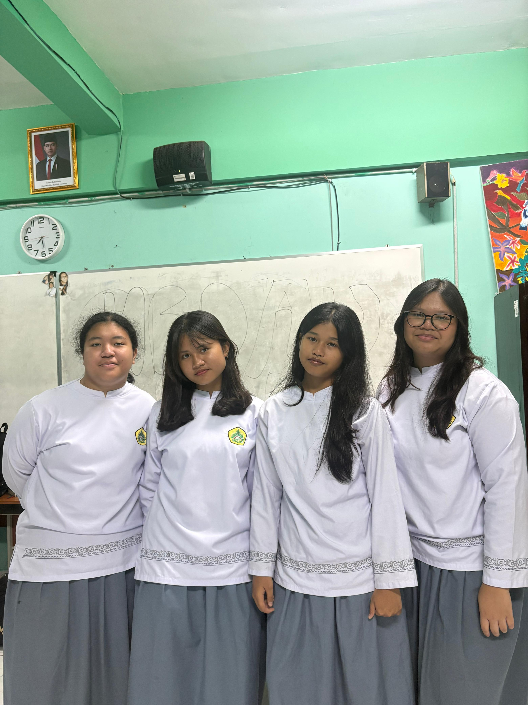

About Me !
Designer Web 🎨
menyulap ide kreatif jadi visual website yang menarik untuk dilihat.
Spesialisasi: Visual Design, Editing & Color. Bikin ide seru kelompok ke
dalam bentuk visual yang hidup! ✨"
Web Coding & Styling
Ahli dalam menyusun struktur halaman web yang rapi, menarik, dan memastikan navigasi menu berjalan lancar tanpa error.
JavaScript Development
Memberikan logika interaktif pada komponen web, mengelola DOM manipulasi, dan menciptakan user experience yang dinamis.
KLOCK
MEMBER SKILLS

UI/UX Design
Merancang tata letak antarmuka pengguna wireframe secara intuitif, mengutamakan kenyamanan alur navigasi pengunjung.
Responsive Layout
Memastikan seluruh elemen halaman web beradaptasi secara presisi saat diakses lewat layar ponsel pintar, tablet, maupun desktop.